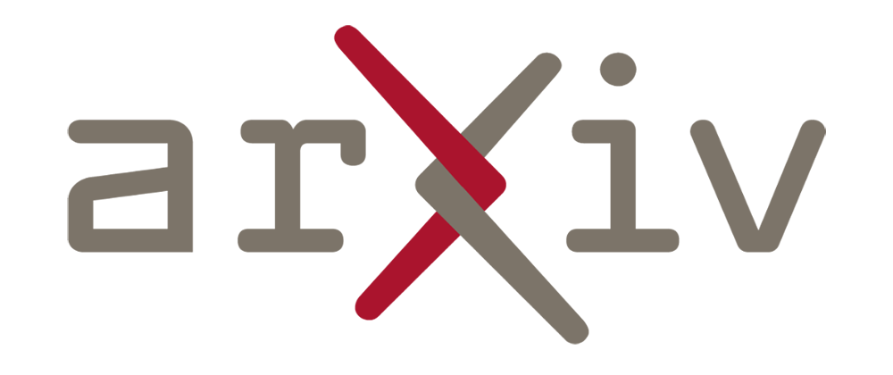
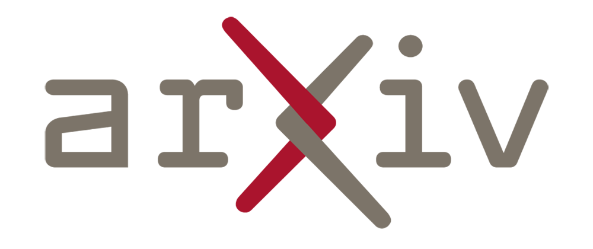

Automatic Speech Recognition
At AI4Bharat, our commitment to Automatic Speech Recognition (ASR) is driven by a vision of embracing and reflecting India's rich linguistic and cultural diversity. We are dedicated to creating inclusive ASR systems that span all 22 constitutionally recognized languages. Our approach combines cutting-edge engineering techniques for large-scale data crawling with meticulous ground-level data collection across over 400 districts, resulting in a dataset of unprecedented magnitude. This includes 300,000 hours of raw speech, 6,000 hours of transcribed data, and 6,400 hours of mined audio-text pairs, augmented by pseudo-labeled data from diverse sources like YouTube. This extensive dataset empowers us to address the complexities of India's linguistic landscape effectively. Our focus on building robust benchmarks is exemplified by our work with Vistaar, IndicSUPERB, Lahaja, and Svarah, which have set new standards in ASR evaluation. Our state-of-the-art models include IndicWav2Vec, IndicWhisper, and IndicConformer, with our latest model supporting all 22 languages and demonstrating our commitment to technological excellence. Moving forward, we aim to enhance our models to handle 8KZ telephony data, adapt them for specific domains and demographics through synthetic data generation, and ensure their functionality in offline settings, further advancing the frontiers of ASR technology for low-resource languages.
-
IndicVoices 2.0
IndicVoices 2.0 is a dataset of natural and spontaneous speech containing a total of 12000 hours of read (8%), extempore (76%) and conversational (15%) audio from 22563 speakers covering 208 Indian districts and 22 languages. Of these 12000 hours, 3200 hours have already been transcribed, with a median of 122 hours per language.
 
June 2024

June 2024
-
Lahaja
Lahaja is a benchmark featuring 12.5 hours of Hindi audio to facilitate a comprehensive assessment of Hindi ASR systems across various accents. This dataset includes read and spontaneous speech on diverse topics, collected from 132 speakers across 83 districts in India.
June 2024
-
IndicVoices 1.0
IndicVoices 1.0 is a dataset of natural and spontaneous speech containing a total of 7348 hours of read (9%), extempore (74%) and conversational (17%) audio from 16237 speakers covering 145 Indian districts and 22 languages. Of these 7348 hours, 1639 hours have already been transcribed, with a median of 73 hours per language.
March 2024
-
Svarah
Svarah is a benchmark addressing gaps in ASR performance on Indian accents, featuring 9.6 hours of transcribed English audio from 117 speakers across 65 locations in India. It includes both read and spontaneous speech across various domains, ensuring diverse vocabulary.
August 2023
-
IndicWhisper
IndicWhisper is finetuned on OpenAI’s Whisper model using the Vistaar-train set with over 10,000 hours across 12 Indian languages
July 2023
-
Kathbath
Kathbath is a comprehensive dataset comprising 1,684 hours of labeled speech data collected from 1,218 contributors across 203 districts in India, spanning 12 Indian languages.
February 2023
-
Shrutilipi
Shrutilipi is a dataset with 6,400+ hours of labeled audio across 12 Indian languages, totaling 4.95M sentences, created by mining text audio pairs from All India Radio.
August 2022
-
Dhwani
Dhwani is a unlabelled audio dataset consisting of 17,000 hours of raw speech data for 40 Indian languages from a wide variety of domains including education, news, technology, and finance
February 2022
-
IndicWav2Vec
IndicWav2Vec is a speech model pretrained on 17,000 hours of unlabelled audio across 40 Indian languages, offering the most extensive language coverage among models tailored for Indian languages.
February 2022